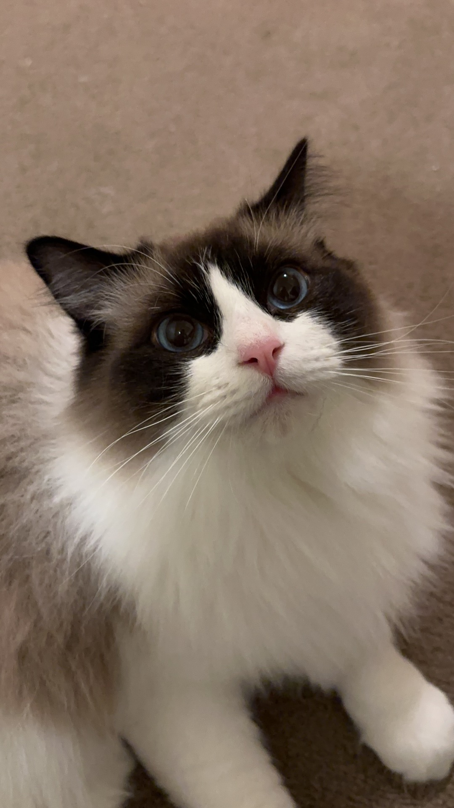

common health problems
Here are some common health problems of Ragdoll.
It is a good idea to learn about these if you want to keep a Ragdoll.
- Hypertrophic Cardiomyopathy (HCM)
- It is a heart disease characterized by thickening of the walls of the
heart and increased left ventricular mass. Rapid breathing, lethargy
and little appetite are common symptoms.
- Polycystic Kidney Disease (PKD)
- Cats that are affected are born with tiny cysts inside the kidneys. These
cysts grow slowly over time, eventually destroying the affected organ. Vomiting,
weight loss, excessive thirst and lethargy are common symptoms.
- Neonatal Isoerythrolysis (NI)
- Neonatal isoerythrolysis is a rare disease caused by an incompatibility between
the blood groups of the mother and one or more kittens.
Read More